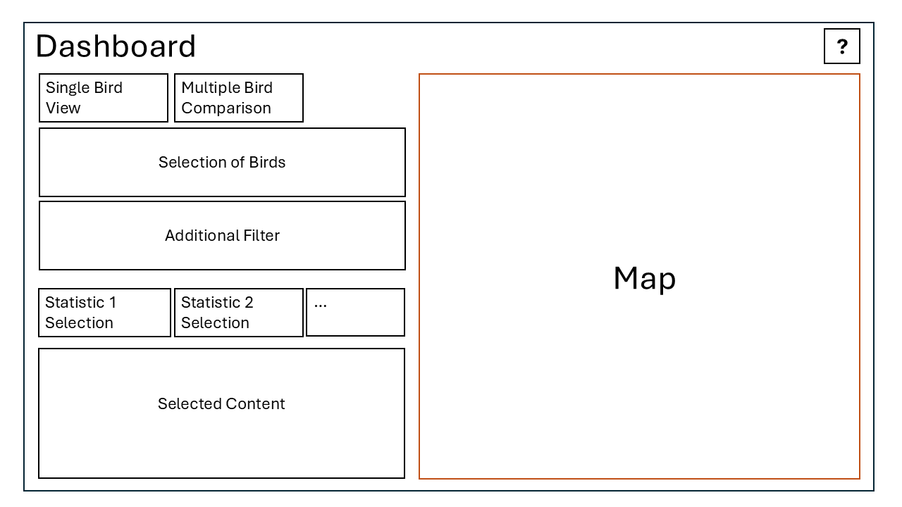

Material and Methods
In the following section, we can see the methods used by our group to produce our final project.
-
Pre Work
-
Topic Search
Internet & Articles (done by: Both)
In the initial phase, we explored potential topics for our project. Since Robin had strong connections with Vogelwarte Schweiz, we decided to focus on bird movement as a compelling subject.
-
Data Retrieval
Vogelwarte.ch (done by: Robin)
The data was gathered from the Vogelwarte Switzerland (see here).
-
Exploratory Data Analysis (EDA)
R (done by: Robin)
Before we started the main analysis, we took a first look at the data. We wanted to understand how the data is structured and if there are any patterns or unusual values. For this, we used simple statistics and visualisations — all done in R.
Curious about the results and the code? Click here to view it.
Exploratory Data Analysis (EDA)
For easier access, our code and results are available in two formats:
-
GitHub Repository:
GEO880 Project Repository
– Main file:
01_EDA.qmd. - Published Quarto Document: RPubs – Interactive EDA Overview
Datapoints per Year, Month, and Year+Month
Age Classes & Tracking Duration
Daytime Distribution of GPS Points (per Year)
Conclusion
The Nutcracker dataset contains 49,758 GPS locations collected from 115 individuals over multiple years. Each data point includes individual bird metadata, body measurements, and seasonal context (34 variables total).
Due to different research focuses and technical constraints (e.g., battery limits), the number of data points varies significantly by individual, season, and year. Also, the intervals between data points and GPS logging schedules differ widely. These factors must be considered in any further analysis.
-
GitHub Repository:
GEO880 Project Repository
– Main file:
-
Analysis
-
Data Processing & Export
R (done by: Both)
Before integrating the data into the RShiny application, we perform preprocessing. To enhance performance, all necessary calculations and data transformations are conducted at this stage. The processed data is then exported as .geojson or .csv files, ready for seamless import into the RShiny app.
Curious to see more? Click here for code and further information.
Preprocessing Overview
Main Steps
- Data cleaning: Removed missing coordinates and known faulty entries.
- Date conversion: Standardised timestamps for temporal filtering.
-
Spatial conversion: Converted data into
spatial features (using
sf). - Season tagging: Assigned each point to a seasonal category (Breeding, Harvesting, Winter).
- Track generation: Created movement lines per bird and month.
-
Clustering (DBSCAN): Identified frequently
visited sites. DBSCAN was used for its ability to detect
clusters without predefining their number and for robustness
to noise. Parameters (
eps,minPts) were adjusted manually based on movement scale and visual checks. -
Export: Saved results as
.geojsonand.csvfor direct use in the app.
Additional Processing
- Cluster review: Visual inspection to remove noise-related artefacts, important due to DBSCAN’s sensitivity.
- Home ranges: Created convex hulls using 95% of points to estimate space use. This is robust but may still overestimate area if outliers remain.
- Overlap matrix: Calculated spatial sharing between individuals. While it doesn’t prove simultaneous use, it highlights shared areas and possible connectivity.
- Helper functions: Implemented for identifying overlaps and filtering relevant data efficiently.
Code and results are available here:
-
GitHub Repository:
GEO880 Project Repository
– Main file:
02_Processing.qmd. - Published Quarto Document: RPubs – Interactive Processing Overview
-
Result
-
Writing Website Texts
Content & Structure (done by: Both)
Robin was responsible for writing the website texts. This included the abstract, introduction, and research questions.
-
Map Sketch
Paper and Pen (done by: Claude)
We chose the R Shiny framework to create our interactive web map. We tried to replicate the initial sketch of the web map and adapted the map accordingly.
Want to see the sketches? Click here.
This sketch shows the first concept of our interactive web map. The goal was to design an intuitive and easy-to-use interface, with clearly separated sections for filtering, statistics, and visualisation. An important idea from the beginning was to include a help (?) button to support users unfamiliar with the interface, ensuring accessibility and clarity.
-
R (done by: Claude)
We developed the entire interactive dashboard using R Shiny. It allows users to explore, filter, and compare bird tracking data through a dynamic and user-friendly web interface.
Show R Shiny Overview and Logic
RShiny Development
Overview
This R Shiny app was developed to allow interactive exploration of bird tracking data. It offers two main views: a single-bird analysis and a comparison mode for two individuals. Users can apply seasonal filters, view spatial movement patterns, and access summary statistics and plots.
The interface is built around the Shiny
uiandservermodel. Data is loaded from GeoJSON and CSV files, preprocessed in earlier steps. Interactivity is implemented using reactivity and event-driven components. Users can switch between birds, toggle seasonal data, and see live updates on maps and charts.How the Code Works
The app's logic is based on reactive programming. It uses conditional UI rendering, map proxies, and spatial operations to provide a responsive experience.
- Bird and Season Selection: Bird IDs are loaded from tracking data. When the “multiple seasons only” filter is active, a function checks which individuals have data across two or more seasons (Breeding, Harvesting, Winter) and updates the selection list accordingly.
-
Navigation:
Users can switch between birds using Previous/Next buttons.
The current index is stored with
reactiveVal. The list respects any filters that are active (e.g. multiple seasons). -
Season Filter UI:
Based on each bird’s available data, only valid seasons are
shown as radio buttons. This is implemented using
renderUI()anduiOutput()to keep the interface clean and relevant. -
Home Range Calculation:
The home range is calculated using a 95% Minimum Convex
Polygon (MCP). First, the centroid of all points is
determined, then distances from the centroid are computed.
The furthest 5% are excluded, and a convex hull is created
from the rest using
st_convex_hull(). - DBScan Clusters: Spatial clusters were computed during preprocessing and stored as polygons in GeoJSON format. The app filters and visualises these per bird and season. Area comparisons are also included as bar plots.
-
Map Rendering:
All maps are rendered using
leaflet. Map updates are handled withleafletProxy()to avoid full redraws. Layers for tracks, points, home ranges, and clusters are toggled via the control box. -
Intersection Logic:
When two birds are selected, their home ranges and clusters
are intersected using
st_intersection(). If an intersection exists, it is shown on the map and in the plots. Otherwise, a message appears instead of an empty result. -
Heatmap:
A simple heatmap view is provided in comparison mode. It
merges points from both birds to visualise overall spatial
intensity using
leaflet.extras::addHeatmap(). -
Charts and Plots:
Several plots are created using
ggplot2: pie charts for seasonal data distribution, bar plots for home range sizes and cluster areas. All plots update dynamically based on current selection.
Code and resources are available in two formats:
- GitHub Repository: GEO880 Project Repository – includes scripts, input files, and documentation.
- RPubs (Quarto Document): RPubs – Interactive Processing Overview
-
Website Creation
HTML/CSS/JS (Bootstrap 5 Framework / done by: Claude)
The project website was built using Bootstrap 5. It provides a clean and responsive layout, styled components, and an interactive timeline to present all project stages.
Show Website Overview and Logic
Website Overview
The website was built using Bootstrap 5, which provides a responsive grid system and clean layout tools. Content is organised in a vertical timeline structure with icons, buttons, and collapsible sections to present each project phase.
How the Code Works
The layout uses
.container,.row, and.col-*for alignment. Each timeline entry is a.timeline-itemwith an icon and collapsible content usingdata-bs-toggle="collapse". Bootstrap utility classes like.btnand.cardhelp structure the visual style.
Bootstrap grid example https://getbootstrap.com/
The full website code is available here:
-
GitHub Repository:
GEO880 Project Repository
– contains all HTML, CSS, and JS files. Main file:
index.html.
-
GitHub Repository:
GEO880 Project Repository
– contains all HTML, CSS, and JS files. Main file:
-
Final Product


{kind=link}
{kind=link}
{kind=link}
{kind=link}
{kind=link}
{kind=link}